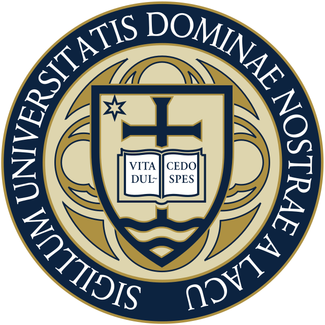

- Dynasty Basketball: A crowdsourced fantasy basketball platform (MERN stack).
- Morse Code Translator: An Arduino-based Morse code translator (buttons => LCD).
- Image Manipulation Scripts: Python scripts for image processing (Canny edge detection, Gaussian blur, etc).
- CS50AI: My projects for Harvard's CS50AI course (traffic sign classifier, masked word predictor, Minesweeper AI, etc).
- CS50x: My projects for Harvard's CS50x course (Flask-based Finance website, C-based data structures and algorithms, Trivia website, etc).
Education
University of Notre Dame
B.S. in Computer Engineering
Expected 2027